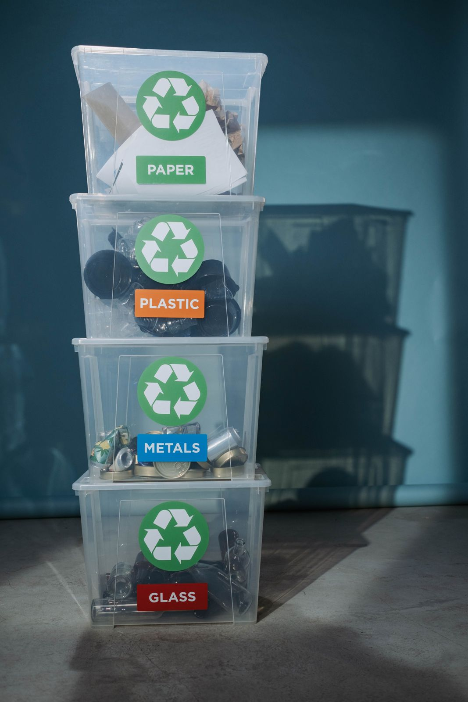
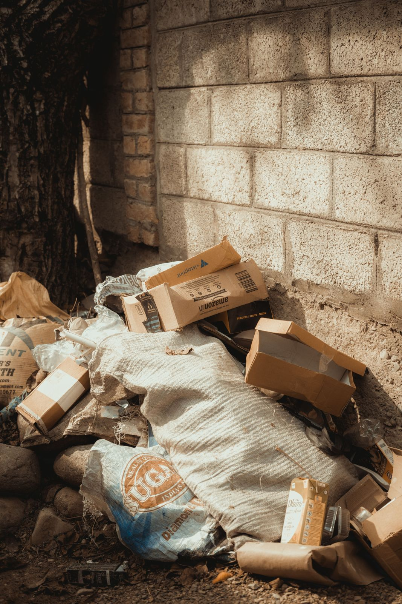

Food & Garden Waste
Examples: Banana peelings (matooke), vegetable scraps, leftover food, leaves, and grass.
How to prepare: Drain excess liquid and tie securely in a biodegradable bag or covered bucket.
Separating rubbish at home prevents odors, keeps recyclables clean, and makes collection safer and faster.
Examples: Banana peelings (matooke), vegetable scraps, leftover food, leaves, and grass.
How to prepare: Drain excess liquid and tie securely in a biodegradable bag or covered bucket.

Examples: Rinsed plastic water bottles, cardboard boxes, newspapers, soda cans, and glass jars.
How to prepare: Keep dry and separate from wet food waste so collectors can recycle them.

Examples: Used tissues, diapers, sweepings, broken ceramics, and soiled wrappers.
How to prepare: Bag tightly and present only on your designated collection day.
Reuse sturdy plastic containers for home storage, carry reusable shopping bags to the market, and turn organic peelings into backyard garden compost.
Wrap broken glass or sharp tins in thick paper and label them clearly so waste collectors do not get injured during pickup.